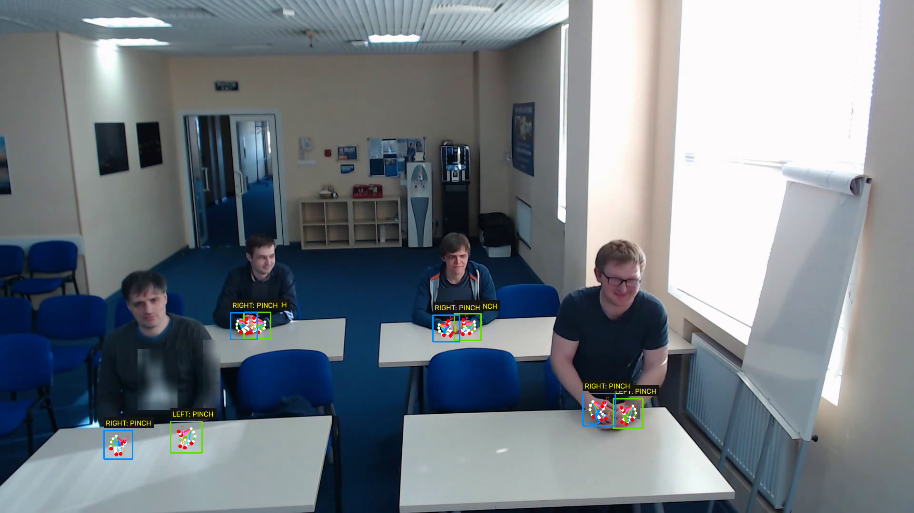

Live Finger Pose & Gesture Tracking
This script processes video streams, maps 21 kinematic hand landmarks, tracks finger flexion angles, and detects gestures such as waving, pinching, pointing, and clapping.

Verified on videos/stock-hand-gestures.mp4 and videos/hand-gesture-01.mp4.
from yolozone import HandTracker, PoseDetector
import cv2
# Initialize Hand Tracker and Pose Estimator
pose = PoseDetector("yolov8s-pose.pt")
tracker = HandTracker()
cap = cv2.VideoCapture("videos/hand-gesture-01.mp4")
while cap.isOpened():
ret, frame = cap.read()
if not ret:
break
# Extract pose keypoints
keypoints = pose.find_keypoints(frame)
# Track hands and finger poses
tracked_hands = tracker.update(frame, keypoints=keypoints)
# Render 21-point skeleton, gesture badge, and motion trails
frame = tracker.draw_tracks(frame, tracked_hands, draw_skeleton=True, draw_trails=True, draw_gestures=True)
cv2.imshow("Hand & Finger Tracking", frame)
if cv2.waitKey(1) & 0xFF == ord('q'):
break
cap.release()
cv2.destroyAllWindows()